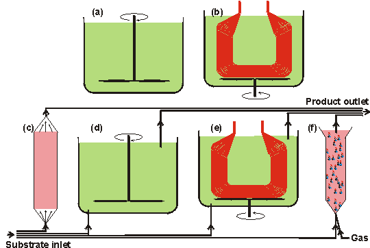
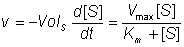
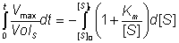
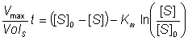
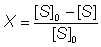
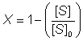
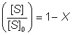
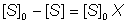
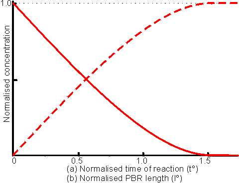

|
|
Enzyme reactorsAn enzyme reactor consists of a vessel, or series of vessels, used to perform a desired conversion by enzymic means. A number of important types of such reactor are shown diagrammatically in Figure 5.1. There are several important factors that determine the choice of reactor for a particular process. In general, the choice depends on the cost of a predetermined productivity within the product's specifications. This must be inclusive of the costs associated with substrate(s), downstream processing, labour, depreciation, overheads and process development, in addition to the more obvious costs concerned with building and running the enzyme reactor. Other contributing factors are the form of the enzyme of choice (i.e., free or immobilised), the kinetics of the reaction and the chemical and physical properties of an immobilisation support including whether it is particulate, membranous or fibrous, and its density, compressibility, robustness, particle size and regenerability. Attention must also be paid to the scale of operation, the possible need for pH and temperature control, the supply and removal of gases and the stability of the enzyme, substrate and product. These factors will be discussed in more detail with respect to the different types of reactor. Batch reactors generally consist of a tank containing a stirrer (stirred tank reactor, STR). The tank is normally fitted with fixed baffles that improve the stirring efficiency. A batch reactor is one in which all of the product is removed, as rapidly as is practically possible, after a fixed time. Generally this means that the enzyme and substrate molecules have identical residence times within the reactor, although in some circumstances there may be a need for further additions of enzyme and/or substrate (i.e., fed -batch operation). The operating costs of batch reactors are higher than for continuous processes due to the necessity for the reactors to be emptied and refilled both regularly and often. This procedure is not only expensive in itself but means that there are considerable periods when such reactors are not productive; it also makes uneven demands on both labour and services. STRs can be used for processes involving non-immobilised enzymes, if the consequences of these contaminating the product are not severe. Batch reactors also suffer from pronounced batch-to-batch variations, as the reaction conditions change with time, and may be difficult to scale-up, due to the changing power requirements for efficient fixing. They do, however, have a number of advantageous features. Primary amongst these is their simplicity both in use and in process development. For this reason they are preferred for small-scale production of highly priced products, especially where the same equipment is to be used for a number of different conversions. They offer a closely controllable environment that is useful for slow reactions, where the composition may be accurately monitored, and conditions (e.g., temperature, pH, coenzyme concentrations) varied throughout the reaction. They are also of use when continuous operation of a process proves to be difficult due to the viscous or intractable nature of the reaction mix.  Figure 5.1. Diagrams of various important enzyme reactor types.
All reactors would additionally have heating/cooling coils (interior in reactors (a), and (d), and exterior, generally, in reactors (b), (c), (e) and (f)) and the stirred reactors may contain baffles in order to increase (reactors (a), (b), (d) and (e) or decrease (reactor (f)) the stirring efficiency. The continuous reactors ((c) -(f)) may all be used in a recycle mode where some, or most, of the product stream is mixed with the incoming substrate stream. All reactors may use immobilised enzymes. In addition, reactors (a), (b) and (e) (plus reactors (d) and (f), if semipermeable membranes are used on their outlets) may be used with the soluble enzyme. The expected productivity of a batch reactor may be calculated by, assuming the validity of the non -reversible Michaelis -Menten reaction scheme with no diffusional control, inhibition or denaturation (see reaction scheme [1.7] and equation (1.7). The rate of reaction (v) may be expressed in terms of the volume of substrate solution within the reactor (VolS) and the time (t):  (5.1) Therefore:  (5.2) On integrating using the boundary condition that [S] = [S]0 at time (t) = 0:  (5.3) Let the fractional conversion be X, where:  (5.4) Therefore;  (5.4a) and  (5.4b) Also  (5.4c) Therefore substituting using (5.4c) and (5.4b) in (5.3): The change in fractional conversion and concentrations of substrate and product with time in a batch reactor is shown in Figure 5.2(a).  Figure 5.2. This figure shows two related behaviours. (a) The change in substrate and product
concentrations with time, in a batch reactor. The reaction S (b) The
change in substrate and product concentrations with reactor length for a PBR.
The reaction S
This page was established in 2004 and last updated by Martin
Chaplin |